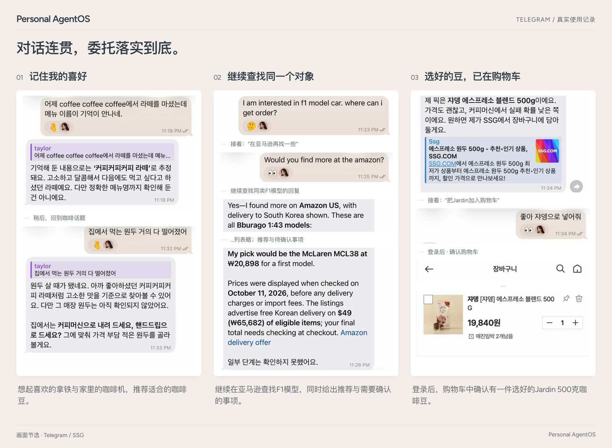

更换 AI 后，仍能接着之前的对话继续。
一起挑选咖啡豆时，从 Codex 切换到 Claude Code。下一个请求无需重新解释之前的推荐，对话仍能继续。
按需要选择和更换 AI 与工具
- Codex
- Claude Code
- 通过 API 连接的 AI
- Ollama
- 连接的工具
更换 AI 后，记忆和工作记录仍会保留
- 它对你的了解
- 没做完的事
- 你交给它的权限
- 实际执行过的记录
现在开始使用 Still
Still 可在 Mac、Linux 或 Windows（WSL2）上使用。连接 ChatGPT 或 Claude 订阅、API 密钥或 Ollama，即可开始。
curl -LsSf https://raw.githubusercontent.com/Jongtae/Still/ebf97d4150be3eb867649a31e79287f05db02886/scripts/install.sh | sh安装脚本的地址固定在一个版本上，运行前可以先查看脚本内容。在 Apple 芯片的 Mac 上用 Homebrew 的话：brew tap jongtae/still https://github.com/Jongtae/Still、brew install jongtae/still/agentos，再运行 agentos start。Windows 上，在 PowerShell 中运行 wsl --install 并重启，打开 Ubuntu，把上面的命令粘贴进去。
-
连接你想使用的 AI
安装后，在终端中连接 AI。ChatGPT 订阅通过 Codex 使用，Claude 订阅通过 Claude Code 使用，也可以选择 API 密钥或 Ollama。已经登录的 AI 会被预先选中。
-
开始与 Still 对话
直接在终端里与 Still 对话，或在浏览器中打开
127.0.0.1:8787。使用期间，请保持终端中的agentos start运行。 -
通过 Telegram 在手机上对话
说一句“连接 Telegram”，将 @BotFather 给你的令牌粘贴到隐藏输入框，再在配对链接里点 Start（开始）。
可选：用壁纸把聊天背景换成 Still 的风格（Still 形象或纯色）：在 Telegram 聊天里打开菜单，选择更换壁纸，再从相册中选它。


首次设置时的画面
________________ __
/ __/_ __/ _/ / / /
_\ \ / / _/ // /__/ /__
/___/ /_/ /___/____/____/
将在此终端中完成 Still 的首次设置。按 Enter 即采用默认选项。
连接 AI
连接你已有的订阅或 API 密钥。
1) ChatGPT 订阅 (Codex)
2) Claude 订阅 (Claude Code)
3) API 密钥 (OpenAI、Anthropic、兼容服务器、Ollama)
4) 稍后在浏览器中连接其余内容见快速开始指南（英文）。
参考之前的对话，开始下一项工作。
Still 会参考之前的对话和保存的记忆来处理下一次请求，并使用你连接的工具完成工作。
把你在对话中提过的喜好用于下一次请求。
它会记住你提过的喜好和情况，在相关请求中作为参考。你可以查看记忆的依据，也可以撤销保存的内容。
对话示例
周一
我家猫最近不怎么吃饭，该怎么办？
可以先试试这几个办法……我记下了你养猫。
周四
帮我挑一台 3000 元以内的扫地机器人。
3000 元以内有三款。最能对付猫毛的那款我放在了第一个。
展开真实画面

在你常聊天的地方，用你已经在用的工具。
在这些地方和它聊
- Telegram
- Slack
- 终端
- Mattermost
- 浏览器
可以连接的工具
- 你的文件夹
- Gmail
- Google 日历
- Google 云端硬盘
- 你登录的网站
文件夹默认只读，除非你另有说明。整理 Gmail 需要单独授权，而且 Still 从不发送邮件。
任务进行中，也可以提问或修改请求。
开始耗时较长的任务前，Still 会说明计划和负责执行的 AI。任务进行中，你可以问其他问题，也可以改变任务方向。
对话示例
帮我给妈妈挑个 300 元以内的生日礼物。
Codex我会找她每天都用得上的东西，看看评价和送达时间，再挑三样给你看。
日语的“谢谢”怎么说？
ありがとうございます（Arigatō gozaimasu）。礼物还在继续找。
- 按照你设置的权限工作。 遵守你为文件夹、账号和工具设置的访问范围和操作权限。
- 每次付款都需要你批准。 即使商品已加入购物车，付款仍需要你单独批准。
- 保护密码和令牌。 密码和令牌不会包含在发送给 AI 模型的内容、日志或执行记录中。
Engineering — 为什么这样设计？
了解 Still 如何保留记忆和工作、做出判断，以及管理用户权限。指南区分已实现的功能、验证过的范围和未来设计，并提供原始文档与代码链接。
一起构建 Still。
你可以反馈使用中遇到的问题、讨论改进想法、完善文档或贡献代码。参与方式请参阅贡献指南。
Still 是 AGPL-3.0 开源项目。产品现状（英文）列出了现在能用的功能和还不完善的地方。当前版本是 v0.3.0。
用了觉得不错，就在 GitHub 上点个 Star 吧，能帮下一个人找到 Still。